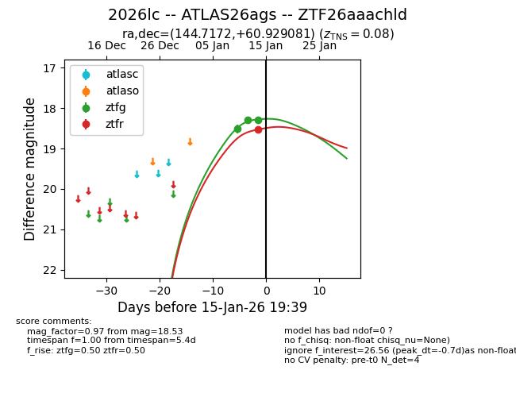
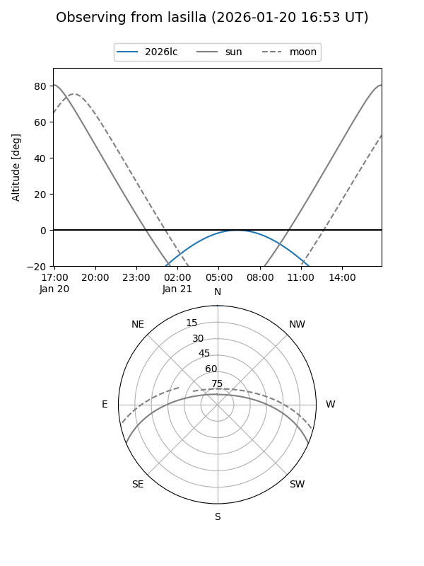
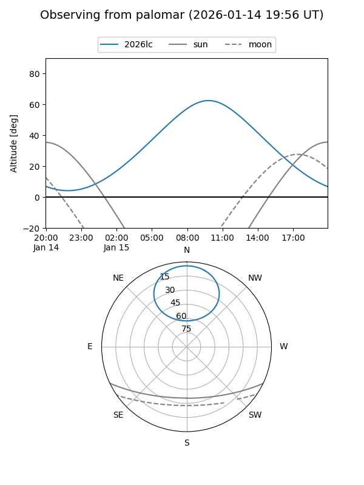
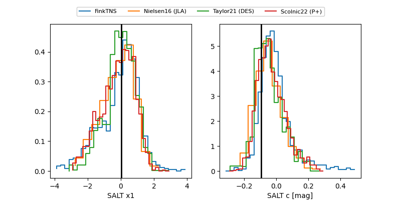

2026lc
Target 2026lc at 2026-01-13 20:55
Aliases and brokers:
FINK: link
Lasair: link
ALeRCE: link
TNS: link
YSE: link
alt names
ZTF26aaachld (ztf,fink_ztf)
2026lc (tns,yse)
ATLAS26ags (atlas)
Coordinates:
equatorial (ra, dec) = 144.7172,+60.92908
equatorial (HMS+DMS) = 09:38:52.12,+60:55:44.69
galactic (l, b) = (152.8056,+43.40073)
Flags:
confirmed ia
Photometry:
last ztfg=18.30
2 ztfg detections
Lightcurve

Visibility


Additional plots
